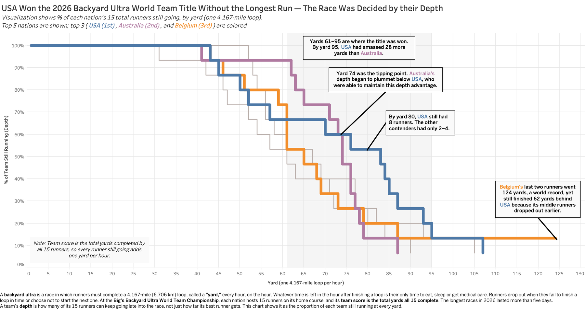
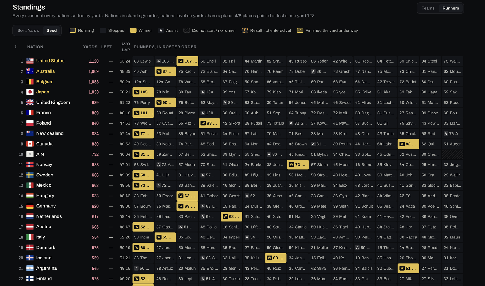
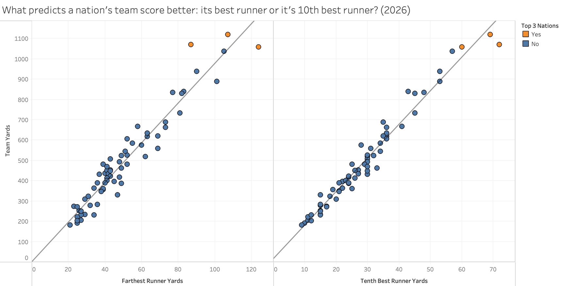
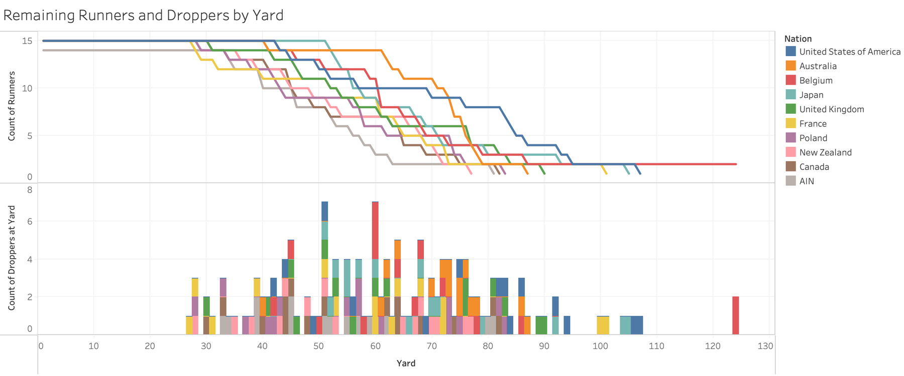
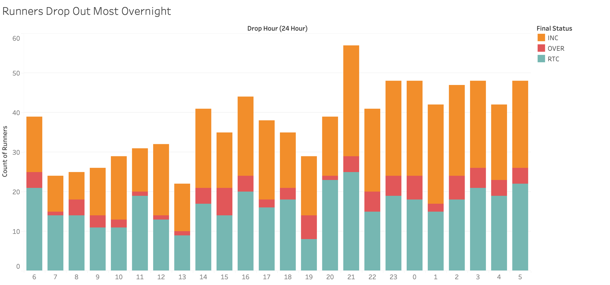

Single viz · Tableau
USA won the 2026 Backyard Ultra team title without the longest run
This was a Makeover Monday challenge that I submitted as an assignment for my Business Intelligence with Visual Analytics class. In a Makeover Monday challenge, the goal is to take a real-world dataset and redesign its visualization, or build a new one, that tells a new story.
The data is from the 2026 Big's Backyard Ultra World Team Championship. Each nation recruits 15 runners, and every hour each runner has to finish a 4.167-mile loop, called a "yard," to stay in. A team's score is the total number of yards all 15 runners complete.
The main story of my viz is that the USA won by keeping more of its runners going for longer, over against plain 'star power'. This is evidenced by the Belgium team, which finished 3rd even though its last two runners reached a world-record 124 yards.

Final visualization. Hover a line for each team's running total. Open in Tableau Public
The original
The original viz
The original Makeover Monday viz was the race's standings table, which lists every runner's final yard count. It shows who won, but not how or when the race was decided. I knew the same data could tell a more interesting story in a more engaging way.

The process
Three exploratory sheets, one final viz
Each exploratory sheet answered one question and led me to the next. Click through to see how I got to the final viz.

What predicts a team score better: the best runner or the 10th-best?
Question
Does a nation's team score track its best runner (star power) or its 10th-best runner (depth)?
Finding
Both correlate strongly (R² = 0.93 for the best runner, 0.96 for the 10th-best). The difference shows up among the contenders: the top three teams' best runners ranged from 87 to 124 yards, yet the teams finished within 62 yards of each other. Belgium had the two longest runs and placed third.
Next
A star runner can get a nation into contention, but can't win the title alone. That made me want to find where in the race the top nations built their lead.

Remaining runners and dropouts by yard
Question
Where in the race do the top teams start to separate?
Finding
None of the top 10 nations lost a runner in the first 26 yards. Teams thinned between yards 40 and 85, and that's where the USA pulled ahead: around yard 80 it still had 8 runners while most contenders were down to 2–4. Runners left 1–2 at a time, with no single collapse. Belgium's last two runners added 74 yards alone, which still wasn't enough.
Next
The title was decided in the middle of the race by the middle runners. Before building on that, I wanted to see whether the time of day explained when runners dropped out.

Runners drop out most overnight
Question
Do runners drop out at particular times of day, and do they choose to stop or get timed out?
Finding
Dropouts concentrate overnight: about 47 per hour between 9 pm and 5 am, compared with about 27 per hour from 7 am to 1 pm, peaking at 9 pm. The split between quitting (RTC) and failing a lap (INC/OVER) barely changes between night and morning (59% vs. 52% failing a lap).
Decision
This is a real pattern, but it's about individual runners, not what makes a team win. I left it out of the final viz and went back to the finding from Sheet 2.
From Sheet 2 to the final viz
Kept
The main idea from Sheet 2: how many runners each nation still has at every yard.
Changed
With 10 colors, Sheet 2 was hard to read. I colored only the USA (the winner), Australia (the team it had to pass) and Belgium (longest runs, but 3rd), kept the 4th and 5th place nations in gray, and gave the top 3 thicker lines. I also switched to % of the team still running.
Added
A shaded band for yards 61–95, where the title was won, and notes at the key moments: yard 74, yard 80 and Belgium's 124-yard finish. I chose this over a simple bar chart of final yards, which would show who won but not how.
Audience & takeaway
Who this is useful for
One meaningful use case for this insight is helping national team selectors decide how to build their 15-runner rosters for the next Big's Backyard Ultra World Team Championship. The main question is: should selectors prioritize a few elite runners who can go the farthest, or a deeper group of runners who can reliably last into the middle of the race?
The 2026 race points toward depth. How long the 8th–12th runners can last matters as much as how far the best runner goes. Before changing how they pick teams, though, selectors should check whether the same pattern held in the 2020–2024 championships.
This is a single race, and each nation runs on its own home course with different terrain, weather and time zone. Some of the differences between teams could come from those conditions, so this shows how the 2026 title was won, not that depth always wins.